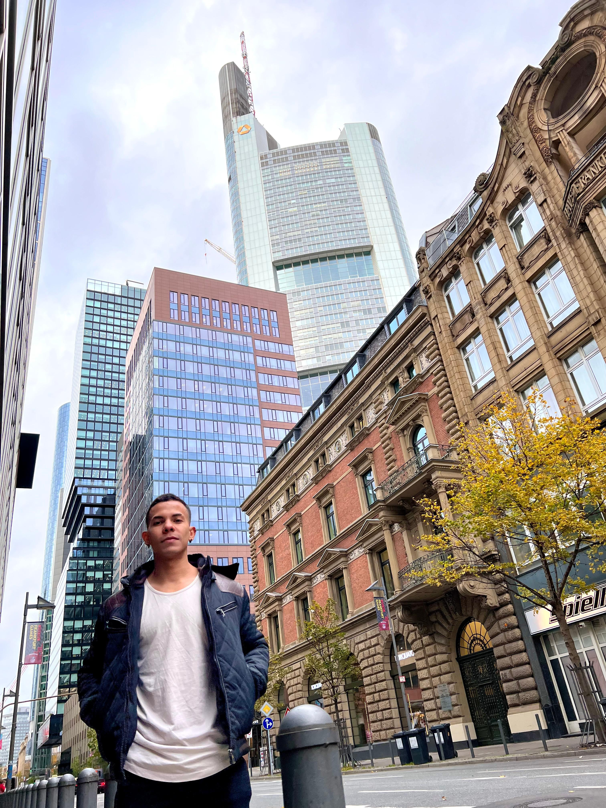

Bilingual electronic engineer graduated from Universidad del Valle, with more than 6 years of work experience in fields like: Electronic instrumentation, automation, programming, maintenance and testing devices, software support, development and implementation of electronic systems, Staff and laboratory management.
High disposition and facility to learn, always open to advice which could help me grow as a person and as a professional, capability to work with multi-disciplinary teams, excellent interpersonal relationships and communication skills. I am someone honest, respectful, committed, responsible, patient and very dedicated.
